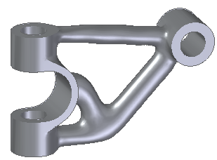
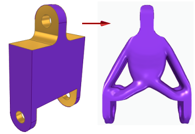
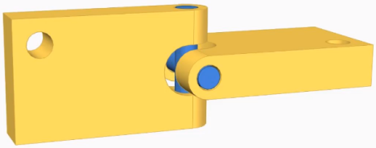
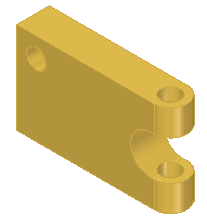
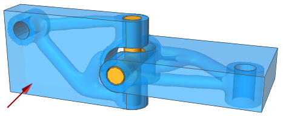
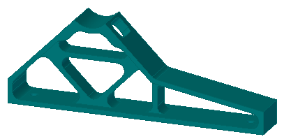
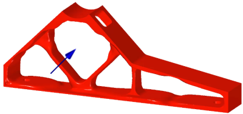

Generative Design overview
What is Generative Design?
Generative Design is a structural optimization process that reduces the weight of a part by removing material, based on a set of physical and manufacturing constraints. The shape generated by the process is lighter, more organic-looking, and requires less material. You can generate different optimizations of the same part, and then select the design that best fits your requirements based on material and per-unit cost.
You can use the solid mesh body produced by Generative Design in your current product development process. For example, you can:
-
Add features to it using standard Solid Edge commands.
-
Create 2D drawings of the 3D part.
-
Add the optimized body to an assembly, aligning and constraining it to other traditionally designed and reverse-engineered components.
Generative Design is an integral part of the Solid Edge convergent modeling products. The structural optimization provided by Generative Design is available on the Generative Design tab in Solid Edge. The commands that are available on the ribbon are based on your Generative Design license type.
For more information, see the Convergent Modeling and Mesh Modeling support topics in help.
Synergies with additive manufacturing
Generative Design can be an important first step in designing a product for additive manufacturing. Historically, the way we make objects has influenced the way we design them. Additive manufacturing (3D printing), which adds material in layers as opposed to subtracting material, allows for more intricate designs that cannot be produced using traditional manufacturing techniques.
The optimized, solid mesh body with smooth surfaces that is produced by Generative Design can be saved in STL or 3MF format, or you can send it to a 3D printer directly from Solid Edge. For more information, see Print an optimized solid mesh body.

When should you use Generative Design structural optimization?
The use case for structural optimization is based on your inputs and where you are in the design process.
-
Structural optimization is best suited for working with your initial, basic geometries with minimal features, to develop a starting point for a new design. The optimization is free-form, often producing a design that is innovative in shape and size.

-
Only part documents (.par) are eligible for structural optimization. But you can optimize any part in an assembly by opening it for edit in the context of the assembly.



-
You also can use structural optimization to re-imagine an existing product, even one that was not designed in Solid Edge. Material is removed from the base part, in somewhat random fashion, as needed to achieve a target mass and weight. This can lead to lighter, yet stronger products.


Generative Design or Solid Edge Simulation?
How is Generative Design structural optimization different from design optimization using Solid Edge Simulation?
The primary difference is that design optimization modifies your parametric model to achieve the goal. It does not try to change its structure or topology. That is, design optimization does not change the base geometric composition of the part (planes, cylinders, boxes, and other shapes); it just changes their sizes to reach the goal.
By contrast, structural optimization actually changes the shape of the model—sometimes producing radical changes—to get the final, optimized shape. This can result in skeletal structures.
For an example of how you can use Solid Edge Simulation and Generative Design together to produce an optimal part design, see Use simulation results to inform generative study inputs.
Comparison of structural and design optimization studies
There are a number of other similarities and differences between the studies optimized by Solid Edge Simulation design optimization and structural optimization in Generative Design.
-
Structural optimization results in a mesh body (faceted body), whereas design optimization results in a solid body (Boolean).
-
Structural optimization is not based on variables, whereas design optimization is parametric.
-
Both types of optimization try to minimize mass (weight) with some subtle differences.
-
Boundary conditions, such as forces and constraints, are used in both types of optimizations, and are applied using similar commands.
-
Study definition steps are very similar, with some differences in inputs between the two. For example, structural optimization has inputs that design optimization does not, such as being able to identify regions where you want to prevent structural changes and features (such as holes) to maintain during the optimization process.
How do I
Generative Design workflowGenerative Design example
Look up more details
Setting Generative Design defaultsGenerative Design licenses